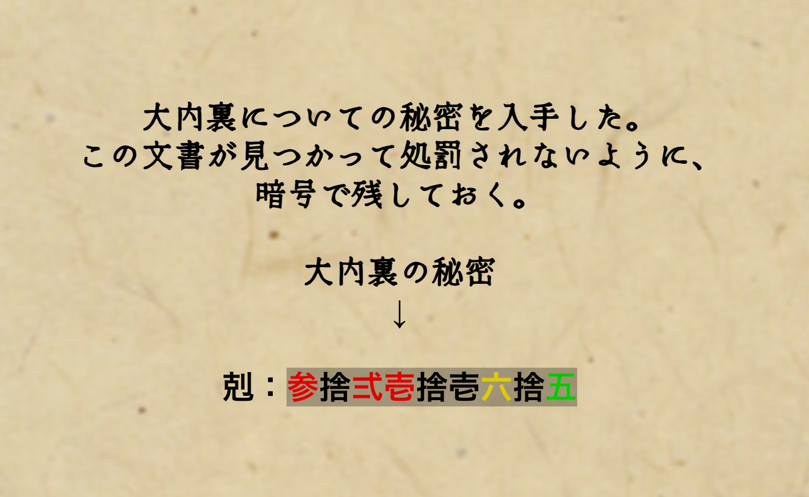

じゃあ話してみようかな。
古ーい倉から出てきたその書物、年代鑑定したら、
なんと【平安時代】の頃に作られたものらしいんだ。
鑑定士さんも、こんな古いのがよく残ってたなーって感心してたよ。
内容は、何かの告発文みたいだよ。昔はこういう偉い人の告発とか、よくあったらしいね。
で、ここからが面白い所。
その文章が、なんと暗号で書かれてる�んだよ。
昔の人が遺した暗号。ワクワクするじゃないか！
ただ、解くのに必要な「鍵」が分からなくて、どうにも解けないんだよ。
君も挑戦してみないかい？こういうの好きだっただろう？
